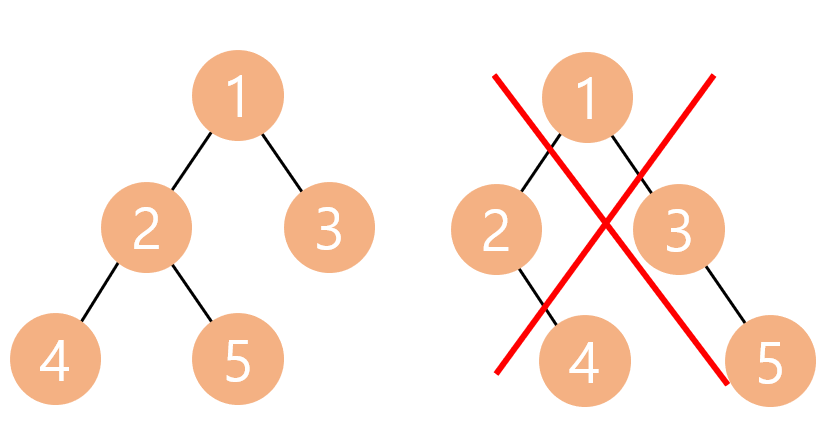
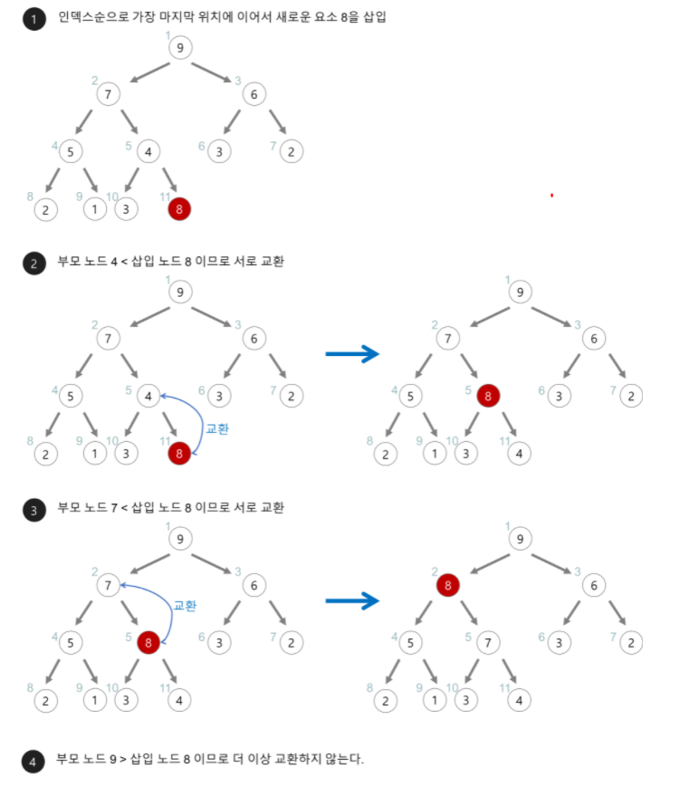
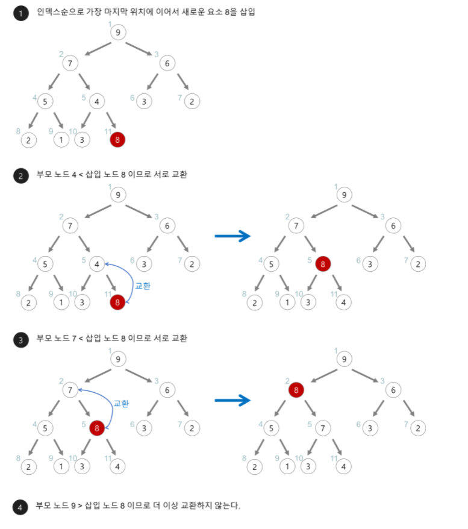

Algorithm Heap에 관하여
오늘은 자료구조 힙에 관하여 알아보자.
완전 이진 트리
힙 자료구조를 알아보기 전에 완전 이진 트리에 관하여 알아둬야 할 필요가 있다. 완전 이진 트리란 이진 트리증 왼쪽부터 차례대로 채워져 있는 트리를 의미한다. 사진으로 보면 더욱 쉽게 이해가 가능하다. 
위 사진에서 왼쪽은 왼쪽부터 차례대로 채워져 있는 상태이므로 완전 이진 트리라 할 수 있으며, 사진의 오른쪽은 왼쪽 노드가 다 채워져 있지 않은 상태 이기 때문에 완전 이진 트리가 아니다.
힙(Heap) 자료구조
자료 구조 힙이란, 완전 이진 트리의 일종으로 우선순위 큐를 구현할때 자주 사용되는 알고리즘이다. 또한, 여러개의 값들 중 최댓값이나 최솟값을 빠르게 찾아낼 수 있도록 만들어진 자료구조이다. 힙은 일종의 반정렬 상태를 유지하며, 중복된 값을 허용한다.
힙에서 부모 노드와 자식 노드의 관계는 아래의 규칙을 따른다.
- 왼쪽 자식의 인덱스 = (부모의 인덱스)*2
- 오른쪽 자식의 인덱스 = (부모의 인덱스)*2+1
- 부모의 인덱스 = (자식의 인덱스)/2
 힙의 종류
-최대 힙
힙의 종류
-최대 힙
- 부모 노드의 키 값이 자식 노드의 키 값보다 크거나 같은 완전 이진트리를 의미한다. -최소 힙
- 부모 노드의 키 값이 자식 노드의 키 값보다 작거나 같은 완전 이진 트리를 의미한다.

힙의 삽입 과정
- 힙에 새로운 요소가 들어오면, 힙의 마지막 노드에 이어서 삽입하게 된다.
- 새로운 노드를 부모노드들과 교환하여 힙의 성질을 만족시킨다. 아래의 과정으로 확인할 수 있다. 
힙의 삭제 과정
- 최대 힙에서 최대값은 루트 노드(1번노드)이므로 루트노드가 삭제된다
- 삭제된 루트 노드엔 힙의 가장 마지막 노드를 가져와서 위치 시킨 뒤
- 자식 노드들과 비교하여 힙을 재구성한다. 아래의 과정으로 확인할 수 있다. 